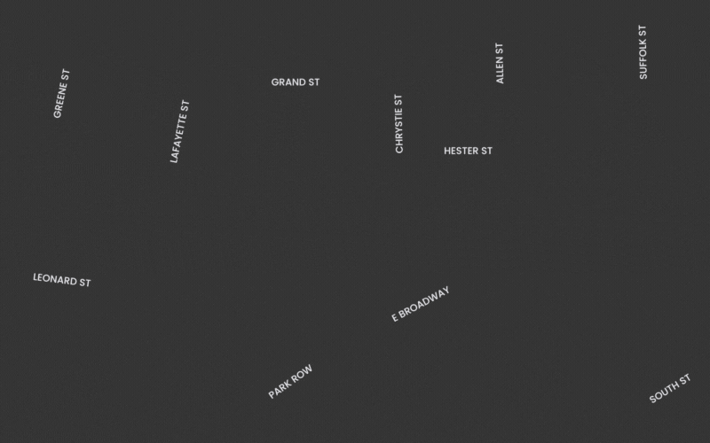
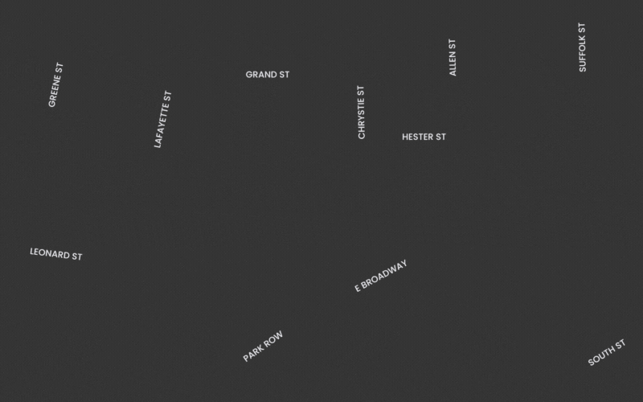
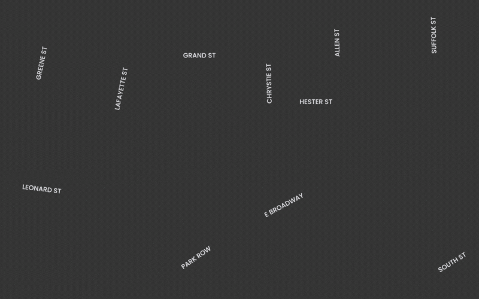
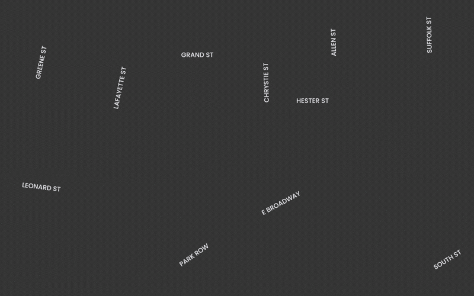

Tourism in Chinatown, New York, has experienced a dramatic trajectory from 2019 to 2023. Pre-pandemic, visitor numbers were steadily climbing, but the pandemic induced a sharp 50% decline. Remarkably, since 2023, there's been a robust recovery, with current figures exceeding pre-pandemic levels by 20%. This resurgence is attributed to Chinatown's cultural magnetism, particularly its authentic culinary scene, traditional markets, and cultural festivities like the Lunar New Year, which alone attracts over 60,000 visitors.
The chart is created by Renee Rui, using data sourced from the 'Welcome to
Chinatown - Chinatown Impact Study (2022)' PDF
Tourism, a critical aspect of New York City's economy, has faced unprecedented challenges due to the pandemic, with a significant downturn in visitor numbers. Nevertheless, as recovery gains momentum, a surge in tourism is expected, with the city's tourism agency forecasting a substantial 70% increase, indicating a strong rebound in spending and visitor activity.[1] Chinatown, amidst this resurgence, confronts unique hurdles, notably the rising cost of living and business operation, which a predictive analysis suggests could dampen its economic vitality without intervention. [2]Additionally, the area grapples with issues of discrimination that must be addressed to maintain its status as a diverse and inclusive destination.[3]
Despite these challenges, the economic prospects for Chinatown are promising. Chinatown's economic outlook is buoyant, buoyed by a $20 million investment from the New York City Regional Economic Development Council. This funding is earmarked for enhancing public spaces and cultural landmarks like Kimlau Square, and for new initiatives like a culinary arts center, to reinvigorate the area's appeal.[4]
In response to changing preferences, Chinatown is expected to diversify its appeal further. New entertainment venues, fashion markets, and drink and dessert shops are being introduced to attract younger visitors. This diversification, supported by the Downtown Revitalization Initiative, is anticipated to inject new life into the community, thereby reinforcing Chinatown's position as an irreplaceable enclave of cultural richness within New York City's tourism landscape. [5]


 

 
